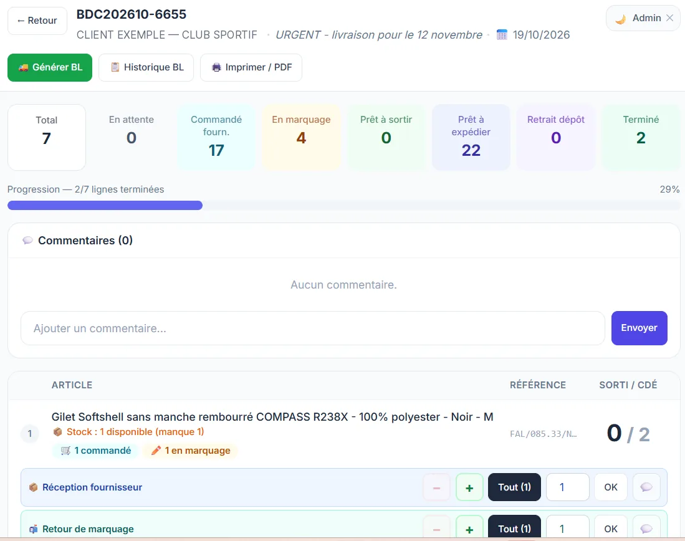

Bons de préparation de commandes sur tablette, reliés à votre gestion
Vos préparateurs impriment les bons, cochent les quantités au stylo, puis quelqu'un ressaisit tout au bureau ? Un outil de préparation sur tablette supprime la ressaisie et vous montre en direct où en est chaque commande.
Ce qui coince aujourd'hui
- Les bons papier se perdent, se tachent ou sont mal relus.
- Les quantités réellement préparées sont ressaisies à la main, avec des erreurs.
- Au bureau, personne ne sait où en est une commande sans aller voir dans l'atelier.
- Les ruptures et les reliquats ne sont découverts qu'au moment de l'expédition.
Ce que fait l'outil
- La liste des commandes à préparer arrive directement sur la tablette, avec les priorités et les dates de livraison.
- Le préparateur valide ligne par ligne, saisit la quantité sortie, signale un manque ou un article remplacé.
- L'avancement de chaque bon est visible depuis le bureau : à préparer, en cours, prêt, livré.
- Les quantités préparées repartent vers votre logiciel de gestion ou de facturation, sans ressaisie, quand celui-ci le permet.
- Chaque étape est horodatée : vous savez qui a préparé quoi, et quand.
Chaque outil est construit à partir de votre façon de travailler : on garde ce qui marche, on supprime les ressaisies et les étapes inutiles.
Exemple de réalisation

Pour qui ?
Négoces, grossistes, ateliers, fabricants et toute entreprise qui prépare des commandes à partir d'un stock : vêtements professionnels, pièces détachées, fournitures, matériel.
Basé à Ingrandes (49123), entre Angers et Nantes, je me déplace dans la Vallée de la Loire, les Mauges, le Pays d'Ancenis et le Segréen. Tarifs sur devis, gratuit et détaillé.
Comment ça se passe
On se rencontre chez vous pour voir le process sur le terrain. Vous recevez un devis clair, puis vous testez une première version avec vos vraies données avant la mise en service et la formation de l'équipe. Voir la méthode · Questions fréquentes